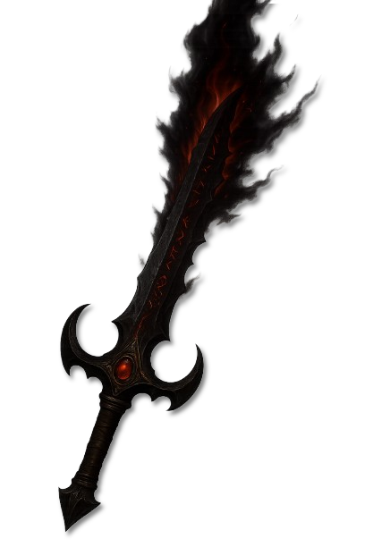

Einführung
In den uralten Schriften und göttlichen Überlieferungen Aldrimars flüstert man von einem Namen, der selbst die tapfersten Krieger erzittern lässt: Balor, der Auslöscher. Gezeugt im Hass, entfesselt durch Verderbnis und gestählt im Feuer der Rebellion, gilt er als einer der mächtigsten und schrecklichsten Gefallenen, die jemals den Erdboden Aldrimars betraten.
Balor war einst der erste geweihte Dämonenfürst des finsteren Gottes Dagon, dessen Streben nach Macht und Rache die Welt der Sterblichen erbeben ließ. Mit einem einzigen Ziel erschaffen – die Vernichtung des Albenvolkes –, brachte Balor eine Welle der Verwüstung über die Lande der frühsten Menschen. Seine blutige Spur markierte den Anfang von Dagons Rebellion gegen die Neun, die Hohen Götter, die über Ordnung und Balance wachten.
Doch Balors Einfluss reichte weit über die Schlachtfelder hinaus. Den Legenden nach war er der Ursprung der Zyklopenriesen, groteske Monstrositäten, die aus den verdorbenen Blutlinien früher Riesenstämme hervorgingen. Verführt durch Balors finsteren Einfluss, erhoben sich diese Stämme gegen die Druiden und die Alben und begingen Greueltaten, die bis heute in den alten Sagen weiterleben. Zur Strafe verfluchten die Götter diese Verräter: Ihre Körper wurden deformiert, ihr Verstand vernebelt, und ihr Erbe gebrandmarkt durch das einäugige Mal des Balor.
Doch Balor war mehr als nur ein Werkzeug Dagons. Wie der dunkle Gott selbst, trug er die Saat der Rebellion in sich. Getrieben von unbändigem Stolz und dem Verlangen nach Macht, wandte sich Balor gegen seinen eigenen Meister und fand Zuflucht bei einem gleichgesinnten Gefallenen: dem Tyrannen, einem gefallenen celestischen Gott, dessen Einfluss weit über die Grenzen der sterblichen Reiche hinausreicht.
So wurde Balor, der einst als Geweihter Dagons geboren wurde, zum Gefallenen – ein schwarzes Abbild seiner einstigen Macht, ein Erzfeind der Alben und ein Sinnbild für Verderbnis und Verrat.
Balor gilt nicht nur als Dämonenfürst, sondern als die fleischgewordene Manifestation von Dagons Hass gegenüber den Völkern der Sterblichen, insbesondere den Alben. Er wurde aus der Essenz dieses Hasses erschaffen, um Dagons Rebellion gegen die Neun voranzutreiben und die Alben auszulöschen.
Allegorisch steht Balor für Dagons unstillbaren Wunsch, die Welt der Sterblichen zu verderben und zu unterwerfen. Er ist ein Auswuchs von Dagons dunkler Seele, geschaffen, um Schmerz und Zerstörung in physischer Form über die Lande zu tragen. In den alten Schriften heißt es, wo Balor wandelte, verdorrte das Land, und seine Berührung brachte Verderben.
Doch wie sein Meister trug Balor den Keim des Aufbegehrens in sich. Er wandte sich schließlich von Dagon ab und schloss sich dem Tyrannen Zarakhul an, einem gefallenen celestischen Gott. In der Schlacht von Estryll wurde Balor bezwungen und seine Essenz verschmolz erneut mit dem Willen Dagons – auf dass sein Hass nie vergehen möge, sondern im Dunkel weiterlebt.
Wesenheit
Balor verkörpert nicht nur Dagons Hass – er ist dieser Hass, in fleischlicher Form gebannt, brennend und unerbittlich. Seine Existenz ist ein Mahnmal der Verderbnis, die aus unstillbarem Zorn und grenzenloser Verachtung erwächst. Balor lebt nur für ein Ziel: zu unterwerfen, zu demütigen und zu vernichten.
Sein Geist ist erfüllt von der Vorstellung, die Völker der Sterblichen – insbesondere die Alben – zu brechen. Für ihn sind sie nichts weiter als Schlachtvieh, eine Masse aus Fleisch und Blut, die unter die eiserne Faust der Verdammnis gezwungen werden soll. Sein Hass ist so tief verwurzelt, dass selbst der Boden unter seinen Schritten verdorrt und die Luft von Fäulnis und Tod durchtränkt wird.
Balor kennt keine Gnade, kein Erbarmen – für ihn ist Demütigung ein Werkzeug der Unterwerfung. Seine Legionen der Verderbnis treiben die Sterblichen wie Vieh vor sich her, berauben sie ihres Willens und brechen ihre Seelen, bis nichts als leere Hüllen zurückbleiben, bereit, dem Willen Dagons zu folgen. In seinem Namen sät er Angst und Verzweiflung, entfesselt Wellen der Zerstörung und löscht ganze Siedlungen aus, nur um das Flüstern der Verzweiflung zu hören, das sich wie ein Echo durch die Lande trägt.
Wo Balor auftaucht, vergeht alles Leben. Wälder ersticken im Schatten, Flüsse werden schwarz vor Fäulnis, und die Schreie der Gequälten hallen durch die Ruinen der Zivilisationen, die seinem Zorn zum Opfer fielen. Er ist nicht nur ein Dämonenfürst – er ist das Symbol für Dagons tiefste Verachtung, der Sturm, der alles verschlingt, was ihm im Weg steht.
Balor erscheint in den Sagen und Überlieferungen Aldrimars als ein gigantischer Dämon, ein Koloss aus Feuer und Schatten, dessen Schritte die Erde erbeben ließen. Sein Leib ist umhüllt von lodernden Flammen, die selbst den härtesten Stein zum Schmelzen bringen, während Rauch und Asche wie eine Krone der Verdammnis um seinen Kopf tanzen. Sein gewaltiger Körper, von Narben des Krieges gezeichnet, ist ein einziges Monument der Zerstörung – Arme wie geschwärzte Baumstämme, Hände, die ganze Felder niederreißen konnten, und Augen, deren Glühen wie flüssiges Magma in die Seelen der Sterblichen brannte.
Unter den Legionen Dagons galt Balor als der abscheulichste und zerstörerischste seiner Fürsten. Seine bloße Anwesenheit brachte Verderben über das Land; Wälder entzündeten sich, Flüsse verdampften, und selbst der Himmel verdunkelte sich, wenn er über die Schlachtfelder zog. In seiner Gegenwart zerbrachen Schwerter, Schilde schmolzen und die Schreie der Sterblichen verstummten im Brüllen der Flammen.
Dienerschaft & Spross
Balors Söhne
Balors Gefolgschaft bestand aus den verfluchten Riesen, die er selbst korrumpierte – die Feuerzyklopen. Diese monströsen Kreaturen, gebunden durch Blut und Fluch an seinen Willen, zogen brandschatzend durch die Lande und trugen das Mal ihres Meisters: ein einziges glühendes Auge, das mit feuriger Wut auf die Welt blickte. An ihrer Seite kämpften fanatische Feuerhexer, verdorbene Sterbliche, die Balor in blutigen Ritualen an sich gebunden hatte. Sie entfesselten Flammen und Asche im Namen ihres Meisters, verbrannten Ernten und verwüsteten ganze Städte, um Balors Hunger nach Zerstörung zu nähren.
Balors Überreste
Doch nicht alles verschwand. Balors Erbe lebt weiter in den Artefakten, die er hinterließ. Verfluchte Waffen, brennende Ketten und Söhne und Töchter, die sein Banner tragen – Überreste seiner Herrschaft, die selbst nach seinem Fall noch Verderben säen. Die Weisen glauben, dass diese Artefakte noch immer ein Echo seiner Macht tragen, bereit, erneut entfesselt zu werden, wenn die Zeit dafür reif ist.
Aspekte, Pakte & Gunst
Balor kann weder Aspekte noch Pakte vergeben, da er nicht mehr als eigenständiges Wesen existiert. Nach seiner Niederlage im Krieg von Estryll wurde er vollständig mit seinem Schöpfer und Vater Dagon vereint. Sein Wille, seine Macht und seine Essenz flossen zurück in die unendliche Dunkelheit Dagons. Wer also nach einem Pakt oder einem Aspekt Balors sucht, trifft nun direkt auf den unerbittlichen Zorn Dagons selbst – als hätte sich sein finsteres Vermächtnis nahtlos in das seines Meisters eingegliedert.
Kult
Balor vereinte in der Vergangenheit zahlreiche Kulte um sich, die seinem Namen in Blut und Feuer huldigten. Diese fanatischen Anhänger sahen in ihm nicht nur einen Dämonenfürsten, sondern einen Wegbereiter für Dagons Rückkehr in die sterbliche Welt. Besonders nach seiner ersten Bannung entstanden viele Sekten, die versuchten, Balor wiederzubeleben und sein zerstörerisches Erbe fortzuführen.
Unter diesen Kulten stachen die Erben der Morgenröte besonders hervor. Diese fanatische Gruppe wurde vom geheimnisvollen Kreis der Dämmerung manipuliert und angestachelt, um Balor erneut zu entfesseln. Ihr Ziel war es jedoch nicht, ihn als Fürsten auf die sterbliche Ebene zurückzubringen, sondern ihn als Opfergabe an Dagon selbst darzubieten. In einem finsteren Ritual, das die Grenzen zwischen den Ebenen verschwimmen ließ, wurde Balor durch eines von Dagons mächtigen Kindern, einem der sogenannten Prinzen Dagons, vollständig absorbiert. Dieser schreckliche Akt verlieh dem Prinzen ungeahnte Macht und trieb den Krieg um Estryll auf seinen blutigen Höhepunkt.
Doch die Macht der Dunkelheit fand ein Ende. Die Ritter der Tafelrunde, legendäre Krieger und Verteidiger des Lichts, bezwangen in einer letzten, alles entscheidenden Schlacht die Prinzen Dagons. Mit ihrem Fall endete auch der Krieg, und Dagons Versuch, Estryll zu unterwerfen, wurde vorerst vereitelt. Die Erben der Morgenröte zerfielen, und der Kreis der Dämmerung verschwand spurlos, nur um in den Schatten weiter seine Pläne zu schmieden.
Relikte, Macht und Vermächtnis
Artefakte

Morvahr
Morvahr war die persönliche Klinge Balors, ein gewaltiges Schwert, das in ewigen schwarzen Flammen brannte. Die Größe der Klinge übertraf die eines Riesen und passte sich unnatürlich der Statur seines Trägers an, als wolle sie ihn verführen und kontrollieren. In den Flammen lag der Fluch Dagons – jede Wunde, die Morvahr schlug, entzündete sich sofort und brannte weiter, selbst wenn der Kampf längst vorbei war. Nichts konnte diese Flammen löschen, weder Wasser noch Magie.
In der finalen Schlacht gegen König Tristan von Cenyr wurde Morvahr von einem der primären Prinzen Dagons geführt, dessen Name in den Chroniken als Der Despot überliefert ist. Die schwarzen Flammen verzehrten alles, was sie berührten, und der Boden selbst schien zu schwelen, wo die Klinge geführt wurde. Allein die göttliche Gunst Nimues und das Artefakt der Göttlichen hielten den verderblichen Einfluss der Klinge in Schach und ermöglichten den Sieg über den Prinzen.
Im selben Glaubensgeflecht